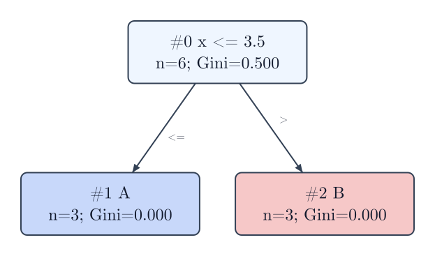
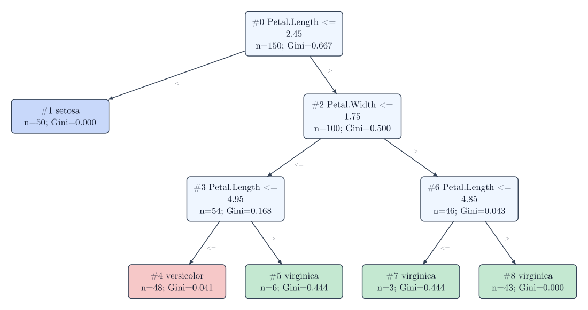
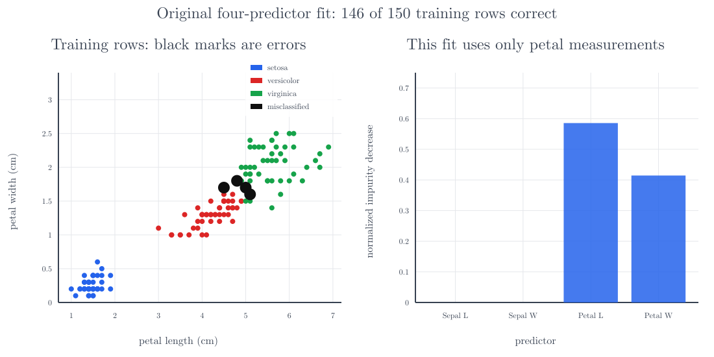
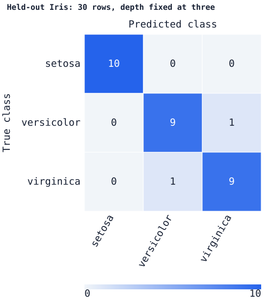
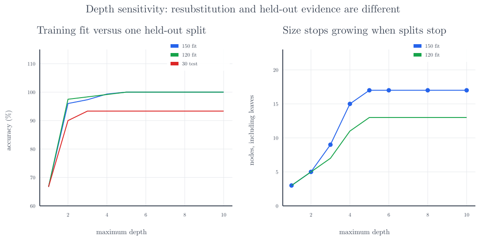
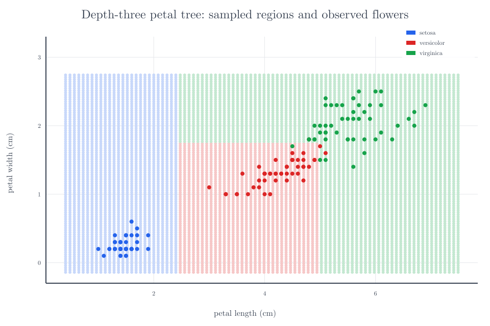

Reading an Iris Decision Tree: Splits, Leaf Shares and Held-Out Checks
Abstract
Given four flower measurements, we want a short sequence of threshold questions that predicts one of three Iris species. Greedy recursive partitioning makes those questions readable, but a perfect fit to the observed flowers does not establish accuracy on new flowers. We begin with six hand-checkable observations, retain the original depth-three Iris fit and predictions, inspect the actual fitted nodes, and compare training diagnostics with a reproducible held-out split. Native C++ diagrams, plots and an annotated confusion matrix are generated by the same complete programs that compute the tables.
One threshold that can be checked by hand
Six observations have x=1,2,3 in class A and x=4,5,6 in class B. The root proportions are one half each, so its Gini impurity is 1−(1/2)²−(1/2)²=1/2. Candidate thresholds are the midpoints 1.5, 2.5, 3.5, 4.5 and 5.5. Their weighted Gini decreases are 0.10, 0.25, 0.50, 0.25 and 0.10. The middle threshold makes both children pure and is the unique best split. Root depth is zero; max_depth=1 permits this one question.
The diagram below comes from the fitted model's actual stored nodes. Left means x<=3.5, right means x>3.5. It is not a separately constructed illustration of what we think the model did.
#include <dm/dm.hpp>
int main() {
std::filesystem::create_directories("build");
dm::dstruct::DataFrame data;
data.add_column("x",std::vector<double>{1,2,3,4,5,6});
data.add_column("label",std::vector<std::string>{"A","A","A","B","B","B"});
const dm::stats::DecisionTreeClassifier model(data,"label ~ x",{.max_depth=1});
std::print("Tiny fit: {} observations; {} nodes; {} leaves; depth {}; accuracy {:.2f}%.\n\n",
model.observations(),model.node_count(),model.leaf_count(),model.depth(),100*model.training_accuracy());
std::print("{}\n",model.node_frame().to_md());
model.plot_tree().save_svg("build/dt_tiny.svg");
}Tiny fit: 6 observations; 3 nodes; 2 leaves; depth 1; accuracy 100.00%.
| node | depth | feature | threshold | left | right | n | impurity | class |
|---|---|---|---|---|---|---|---|---|
| 0 | 0 | x | 3.5 | 1 | 2 | 6 | 0.5 | A |
| 1 | 1 | NA | -1 | -1 | 3 | 0.0 | A | |
| 2 | 1 | NA | -1 | -1 | 3 | 0.0 | B |

What this CART implementation optimizes
At a node with n rows and class fractions p_k, the two supported criteria are
Gini is the default. A threshold divides the rows into left and right sets. Its local benefit is
The learner sorts rows separately for each candidate predictor at each node, sweeps class counts across consecutive distinct values, and tries their separating midpoints. A node with n rows and p tried predictors therefore costs O(p n log n) for sorting plus the class-count impurity work. Accepted gains must improve the current best by more than 10⁻¹²; ties within that tolerance keep the earlier predictor/threshold. Ordinary CART tries all design columns. A nonzero max_features requests a seeded random subset per node for ensemble use.
Growth stops at pure nodes, the depth limit, too few rows to split, or no admissible gain exceeding min_impurity_decrease. Every candidate child must also satisfy min_samples_leaf. This implementation uses local node impurity decrease for that option; it does not multiply the stopping threshold by the node's fraction of the whole dataset. It provides a greedy unpruned CART-style tree, not exhaustive search over tree structures or cost-complexity pruning.
For importance, each chosen predictor receives (n_node/n_total)Δ. Normalize the resulting nonnegative credits to sum to one when their sum is positive; an unsplit model instead has all-zero importance. This measures use by this fitted tree. It does not establish that a zero-importance measurement is irrelevant to every other model or population.
Prediction follows stored <= thresholds to a leaf. The majority class wins, with class ties resolved in sorted class order. predict_detail returns empirical training class shares in that leaf, not a separately calibrated probability for an unseen population. Missing training rows are dropped by the formula design; missing prediction rows receive an empty label/probability vector, and unseen categorical levels throw.
Retain the original depth-three Iris fit
The canonical embedded dm::datasets::iris() frame supplies 150 rows, four numeric measurements in centimetres and one species column. There are 50 rows per species. No file download or companion checkout is needed. We fit the original four-predictor formula and depth three. The node table and the diagram are two views of the same fitted model.
#include <dm/dm.hpp>
int main() {
std::filesystem::create_directories("build");
const auto iris=dm::datasets::iris();
const dm::stats::DecisionTreeClassifier model(iris,
"Species ~ Sepal.Length + Sepal.Width + Petal.Length + Petal.Width",{.max_depth=3});
std::print("Iris frame: {} rows, {} columns.\n\n",iris.nrows(),iris.ncols());
std::print("Tree: {} nodes, {} leaves, depth {}. Training accuracy {:.2f}%.\n\n{}\n",model.node_count(),model.leaf_count(),model.depth(),100*model.training_accuracy(),model.node_frame().to_md());
if(model.node_count()!=9 || model.leaf_count()!=5 || std::abs(model.training_accuracy()-146.0/150)>1e-12)
throw std::runtime_error("original fitted structure changed");
model.plot_tree().save_svg("build/dt_iris_tree.svg");
}Iris frame: 150 rows, 5 columns.
Tree: 9 nodes, 5 leaves, depth 3. Training accuracy 97.33%.
| node | depth | feature | threshold | left | right | n | impurity | class |
|---|---|---|---|---|---|---|---|---|
| 0 | 0 | Petal.Length | 2.45 | 1 | 2 | 150 | 0.667 | setosa |
| 1 | 1 | NA | -1 | -1 | 50 | 0.000 | setosa | |
| 2 | 1 | Petal.Width | 1.75 | 3 | 6 | 100 | 0.500 | versicolor |
| 3 | 2 | Petal.Length | 4.95 | 4 | 5 | 54 | 0.168 | versicolor |
| 4 | 3 | NA | -1 | -1 | 48 | 0.041 | versicolor | |
| 5 | 3 | NA | -1 | -1 | 6 | 0.444 | virginica | |
| 6 | 2 | Petal.Length | 4.85 | 7 | 8 | 46 | 0.043 | virginica |
| 7 | 3 | NA | -1 | -1 | 3 | 0.444 | virginica | |
| 8 | 3 | NA | -1 | -1 | 43 | 0.000 | virginica |

The root's Gini impurity is 2/3. Its first split separates 50 pure setosa rows from 100 rows equally divided between the other species, so its gain is 2/3−(50/150)0−(100/150)(1/2)=1/3. Petal.Width offers an equally separating root question; deterministic predictor order keeps Petal.Length. Tree topology and importance can therefore differ between implementations with equally good tied splits.
Training errors and impurity importance
The plotted points use true species colours; a black overlaid marker identifies each training mistake. The three-by-three table uses actual species as rows and predictions as columns, in the printed class order. The petal view is a projection of the four-predictor model, and the importance panel reports the full fit's normalized impurity credits.
#include <dm/dm.hpp>
int main() {
std::filesystem::create_directories("build");
const auto iris=dm::datasets::iris();
const dm::stats::DecisionTreeClassifier model(iris,"Species ~ .",{.max_depth=3});
std::print("Class order:");for(const auto& label:model.classes())std::print(" {}",label);std::print(".\n\n");
std::print("| actual | predicted setosa | predicted versicolor | predicted virginica |\n| :--- | ---: | ---: | ---: |\n");
const auto cm=model.confusion_matrix();
for(std::size_t i=0;i<3;++i)std::print("| {} | {:.0f} | {:.0f} | {:.0f} |\n",model.classes()[i],cm(i,0),cm(i,1),cm(i,2));
const auto importance=model.feature_importance();
std::print("\n| predictor | normalized impurity importance |\n| :--- | ---: |\n");
for(std::size_t j=0;j<importance.size();++j)std::print("| {} | {:.4f} |\n",model.predictor_names()[j],importance[j]);
auto scatter=model.plot_classification(iris,"Petal.Length","Petal.Width");
scatter.title("Training rows: black marks are errors").x_label("petal length (cm)").y_label("petal width (cm)").y_limits(0,3.4);
auto bars=dm::graphics::RPlot::create();
bars.bars({0,1,2,3},importance,"",{37,99,235}).x_ticks({0,1,2,3},{"Sepal L","Sepal W","Petal L","Petal W"})
.x_label("predictor").y_limits(0,.75).y_label("normalized impurity decrease").title("This fit uses only petal measurements");
dm::graphics::RLayout::create(1,2).add(scatter).add(bars).size(1100,550)
.title("Original four-predictor fit: 146 of 150 training rows correct").fit_panels()
.save_svg("build/dt_iris_diagnostics.svg");
}Class order: setosa versicolor virginica.
| actual | predicted setosa | predicted versicolor | predicted virginica |
|---|---|---|---|
| setosa | 50 | 0 | 0 |
| versicolor | 0 | 47 | 3 |
| virginica | 0 | 1 | 49 |
| predictor | normalized impurity importance |
|---|---|
| Sepal.Length | 0.0000 |
| Sepal.Width | 0.0000 |
| Petal.Length | 0.5856 |
| Petal.Width | 0.4144 |

A separate held-out check
Keep depth three fixed and split the original rows with train_test_split(iris,0.2,42,"Species"). Stratification holds out ten rows from each species, leaving 120 training rows and 30 test rows. The next model is fitted only to those 120 training rows. Its test predictions build the annotated ConfusionMatrix through actual/predicted label pairs. The full-data fit above is an interpretation of all 150 observations; it is not the model evaluated on these held-out rows.
#include <dm/dm.hpp>
int main() {
std::filesystem::create_directories("build");
const auto [train,test]=dm::stats::train_test_split(dm::datasets::iris(),.2,42,"Species");
const dm::stats::DecisionTreeClassifier model(train,"Species ~ .",{.max_depth=3});
const auto predicted=model.predict(test);dm::nn::ConfusionMatrix cm(model.classes().size());
for(std::size_t i=0;i<test.nrows();++i) {
const auto actual=test.string_at("Species",i);
const auto a=std::find(model.classes().begin(),model.classes().end(),actual)-model.classes().begin();
const auto b=std::find(model.classes().begin(),model.classes().end(),predicted[i])-model.classes().begin();
cm.add(a,b);
}
std::print("Split: {} training rows; {} held-out rows. Depth-three training accuracy {:.2f}%; held-out accuracy {:.2f}%.\n\n",
train.nrows(),test.nrows(),100*model.training_accuracy(),100*cm.accuracy());
std::print("| actual | predicted setosa | predicted versicolor | predicted virginica |\n| :--- | ---: | ---: | ---: |\n");
for(std::size_t i=0;i<3;++i)std::print("| {} | {} | {} | {} |\n",model.classes()[i],cm.cells()[i][0],cm.cells()[i][1],cm.cells()[i][2]);
dm::nn::ConfusionMatrixPlotOptions options;options.labels=model.classes();options.cell_size=120;options.font_size=20;
options.title="Held-out Iris: 30 rows, depth fixed at three";
cm.save_svg("build/dt_iris_holdout.svg",options);
}Split: 120 training rows; 30 held-out rows. Depth-three training accuracy 98.33%; held-out accuracy 93.33%.
| actual | predicted setosa | predicted versicolor | predicted virginica |
|---|---|---|---|
| setosa | 10 | 0 | 0 |
| versicolor | 0 | 9 | 1 |
| virginica | 0 | 1 | 9 |

This depth-three subset fit gets 118 of its 120 training rows correct (98.33%) and 28 of the 30 held-out rows correct (93.33%). Its two test errors exchange one versicolor and one virginica.
One test row changes accuracy by 1/30, about 3.33 percentage points. This small, single split is a limited check on generalization, not a precise population performance estimate or a ranking against LDA/SVM. Those methods must be fitted and scored on the same rows before their errors can be compared fairly. Earlier companion reports' training percentages alone cannot establish such a comparison.
Depth controls training fit and tree size
Repeat the original depths 1,2,3,4,5,6,8,10. The full-data fit retains the original accuracy/node-count curve. Separate 120-row fits reuse the same split, and we print their training and held-out scores alongside. Each depth builds a fresh tree. These repeated test views are exploratory; using them to choose depth would make this test set part of selection, requiring a new evaluation or nested resampling for an independent claim.
#include <dm/dm.hpp>
int main() {
std::filesystem::create_directories("build");
const auto iris=dm::datasets::iris();
const auto [train,test]=dm::stats::train_test_split(iris,.2,42,"Species");
std::vector<double> depths,full_acc,train_acc,test_acc,full_nodes,train_nodes;
std::print("| max depth | full-data training % | full nodes | 120-row training % | 30-row test % | 120-row nodes |\n| ---: | ---: | ---: | ---: | ---: | ---: |\n");
for(std::size_t d:{1,2,3,4,5,6,8,10}) {
const dm::stats::DecisionTreeClassifier full(iris,"Species ~ .",{.max_depth=d});
const dm::stats::DecisionTreeClassifier model(train,"Species ~ .",{.max_depth=d});
const auto predicted=model.predict(test);std::size_t correct=0;
for(std::size_t i=0;i<test.nrows();++i)correct+=predicted[i]==test.string_at("Species",i);
const double score=100.0*correct/test.nrows();
std::print("| {} | {:.2f} | {} | {:.2f} | {:.2f} | {} |\n",d,100*full.training_accuracy(),full.node_count(),100*model.training_accuracy(),score,model.node_count());
depths.push_back(d);full_acc.push_back(100*full.training_accuracy());train_acc.push_back(100*model.training_accuracy());test_acc.push_back(score);
full_nodes.push_back(full.node_count());train_nodes.push_back(model.node_count());
}
auto a=dm::graphics::RPlot::create();
a.line(depths,full_acc,"150 fit",{37,99,235}).line(depths,train_acc,"120 fit",{22,163,74})
.line(depths,test_acc,"30 test",{220,38,38}).y_limits(60,115).x_label("maximum depth").y_label("accuracy (%)").title("Training fit versus one held-out split");
auto b=dm::graphics::RPlot::create();
b.line(depths,full_nodes,"150 fit",{37,99,235}).points(depths,full_nodes,"",{37,99,235},5)
.line(depths,train_nodes,"120 fit",{22,163,74}).y_limits(0,23).x_label("maximum depth").y_label("nodes, including leaves").title("Size stops growing when splits stop");
dm::graphics::RLayout::create(1,2).add(a).add(b).size(1100,550)
.title("Depth sensitivity: resubstitution and held-out evidence are different").fit_panels().save_svg("build/dt_iris_depth.svg");
}| max depth | full-data training % | full nodes | 120-row training % | 30-row test % | 120-row nodes |
|---|---|---|---|---|---|
| 1 | 66.67 | 3 | 66.67 | 66.67 | 3 |
| 2 | 96.00 | 5 | 97.50 | 90.00 | 5 |
| 3 | 97.33 | 9 | 98.33 | 93.33 | 7 |
| 4 | 99.33 | 15 | 99.17 | 93.33 | 11 |
| 5 | 100.00 | 17 | 100.00 | 93.33 | 13 |
| 6 | 100.00 | 17 | 100.00 | 93.33 | 13 |
| 8 | 100.00 | 17 | 100.00 | 93.33 | 13 |
| 10 | 100.00 | 17 | 100.00 | 93.33 | 13 |

On this split, test accuracy is 93.33% from depth three onward, even while training accuracy reaches 100% and the subset tree grows to 13 nodes. The extra fit to training rows supplies no observed test gain.
Axis-aligned regions and the original new-flower predictions
Fit a separate depth-three tree with only petal length and width for this two-dimensional picture. The plot samples its predictions on a regular grid of pale points, then overlays observed flower measurements. It visualizes axis-aligned threshold regions; it is not an exact vector polygon construction or a projection of an arbitrary four-dimensional boundary. On this dataset the four-predictor fit never uses sepal features, so the two-predictor fit has the same training score.
The prediction table keeps the original four supplied flowers and the original four-predictor model. The last flower reaches a three-row leaf containing one versicolor and two virginica training rows. Its 1/3 and 2/3 shares describe that leaf's training composition. They are not a guarantee of a two-thirds chance of a correct future prediction.
#include <dm/dm.hpp>
int main() {
std::filesystem::create_directories("build");
const auto iris=dm::datasets::iris();
const dm::stats::DecisionTreeClassifier boundary(iris,"Species ~ Petal.Length + Petal.Width",{.max_depth=3});
auto plot=boundary.plot_decision_regions("Petal.Length","Petal.Width",90);
const std::vector<dm::graphics::RGB> colors{{37,99,235},{220,38,38},{22,163,74}};
for(std::size_t k=0;k<boundary.classes().size();++k) {
const auto subset=iris.filter([&](const auto& row){return row.get_string("Species")==boundary.classes()[k];});
plot.points(subset.numeric_column("Petal.Length").values(),subset.numeric_column("Petal.Width").values(),"",colors[k],4);
}
plot.legend(boundary.classes(),colors).title("Depth-three petal tree: sampled regions and observed flowers")
.x_label("petal length (cm)").y_label("petal width (cm)").y_limits(-.3,3.3).save_svg("build/dt_iris_regions.svg");
std::print("Two-predictor training accuracy {:.2f}%.\n\n",100*boundary.training_accuracy());
const dm::stats::DecisionTreeClassifier model(iris,"Species ~ .",{.max_depth=3});
dm::dstruct::DataFrame flowers;
flowers.add_column("Sepal.Length",std::vector<double>{5.1,6,6.5,6.2});
flowers.add_column("Sepal.Width",std::vector<double>{3.5,2.7,3,2.8});
flowers.add_column("Petal.Length",std::vector<double>{1.4,4.5,5.5,4.8});
flowers.add_column("Petal.Width",std::vector<double>{.2,1.5,2,1.8});
const auto q=model.predict_detail(flowers);
std::print("| flower row | predicted species | P(setosa) | P(versicolor) | P(virginica) |\n| ---: | :--- | ---: | ---: | ---: |\n");
for(std::size_t i=0;i<q.class_label.size();++i)
std::print("| {} | {} | {:.4f} | {:.4f} | {:.4f} |\n",i,q.class_label[i],q.probability[i][0],q.probability[i][1],q.probability[i][2]);
}Two-predictor training accuracy 97.33%.
| flower row | predicted species | P(setosa) | P(versicolor) | P(virginica) |
|---|---|---|---|---|
| 0 | setosa | 1.0000 | 0.0000 | 0.0000 |
| 1 | versicolor | 0.0000 | 0.9792 | 0.0208 |
| 2 | virginica | 0.0000 | 0.0000 | 1.0000 |
| 3 | virginica | 0.0000 | 0.3333 | 0.6667 |

What the executed study supports
The original depth-three model, four training errors, petal-only importance, depth saturation and four new-flower predictions are retained. The small example makes local impurity reduction checkable by hand; the native tree diagrams expose actual fitted node ids and thresholds. Perfect training accuracy at greater depth demonstrates capacity to fit these observed labels. The separate held-out experiment adds evidence about new rows, with the limits of a small, single exploratory split.
The fitted model is owned and copyable. plot_tree() borrows it without refitting, returns an independently owned native Diagram and checks its complete-node cap before layout allocation. The default cap is 255 nodes; zero disables that optional cap. Node-table and diagram outputs describe the same stored model, and leaves keep their left-to-right fitted order.
References
L. Breiman, J. H. Friedman, R. A. Olshen and C. J. Stone (1984), [Classification and Regression Trees](https://www.routledge.com/Classification-and-Regression-Trees/Breiman-Friedman-Stone-Olshen/p/book/9780412048418/), introduces the CART framework. The implementation here grows greedy binary trees with the stopping rules and tie tolerance stated above; cost-complexity pruning is not included.
The [R datasets Iris documentation](https://stat.ethz.ch/R-manual/R-devel/library/datasets/html/iris.html) describes the standard 150-row frame, centimetre units and three species, with references to Anderson's collection and Fisher's 1936 analysis. This report executes the repository's embedded frame directly. Iris copies can differ in individual recorded values, so the embedded data, formula, options and deterministic tie rule define these reproducible fits.